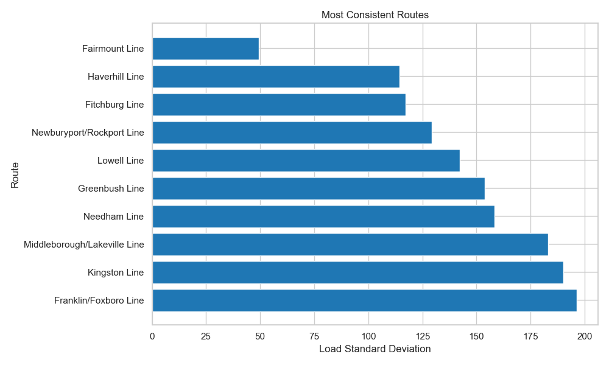

Project Overview
This project explores patterns in MBTA commuter rail usage to better understand how public transportation is utilized across the Boston area. By analyzing ridership data across routes, time periods, and service types, we aim to identify meaningful trends in passenger behavior.
These patterns provide insight into when and where demand is highest, as well as how ridership varies over time. Understanding these dynamics is important as Boston continues to grow and evolve, helping improve efficiency, reduce congestion, and support better transit planning.
About the Data
The dataset used in this project comes from the MBTA Open Data Portal and contains over 15,000 observations and more than 10 attributes. Key variables include route name, stop time, date, day type, and measures of passenger activity such as average boardings, alightings, and total passenger load.
The data includes both categorical and continuous variables, allowing analysis across routes and time. It was cleaned by removing duplicates, handling missing values, and creating derived features such as hour and total passengers.
References
1. Ridership Trends Over Time
This visualization highlights how ridership has changed over time across routes, helping identify long-term trends and route stability.
2. Average Passengers On Board by Hour and Route
This heatmap shows how passenger load varies across routes and time of day, highlighting peak commuting periods.
3. Most Consistent Routes
This chart compares route consistency, showing which routes have stable ridership and which experience fluctuations.

4. Passenger Distribution by Hour
This D3 chart shows how ridership varies throughout the day, revealing peak and off-peak travel periods.
5. Passenger Distribution by Route and Hour
This treemap shows how passenger volume is distributed across routes and times, highlighting where ridership is most concentrated.
6. Passenger Flow: Day Type to Route to Time of Day
This Sankey diagram provides a high-level view of how passengers flow through the system, linking day type, routes, and time of day.
Summary of Findings
Ridership patterns are strongly influenced by both time and route. Peak hours show concentrated demand, while some routes demonstrate more consistent usage than others.
These insights can inform better transit planning and resource allocation, and future analysis could incorporate additional external factors such as weather or service disruptions.